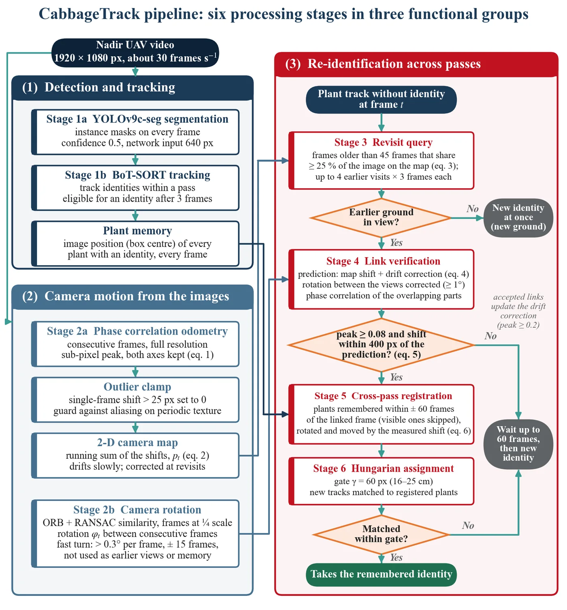
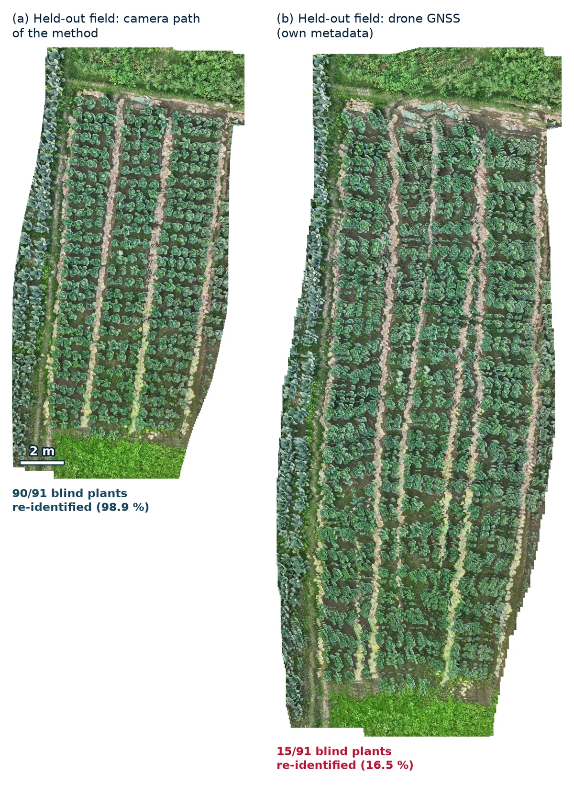

A vision-only UAV pipeline that recognises individual plants again on later drone passes, from the video alone: no RTK-GPS, no ground-control points, no landmarks.
Tracking the same individual plant across repeated drone surveys is the basis for per-plant growth curves, early stress detection, and yield forecasting. The standard solution, RTK-GPS on the drone, is accurate but expensive and often out of reach for smallholder or commercial vegetable operations on tighter budgets. CabbageTrack asks whether that same re-identification can be done from imagery alone.
The pipeline segments plants with YOLOv9c-seg, tracks them within each pass with BoT-SORT, and follows the drone's movement by phase correlation of consecutive video frames, a keypoint-free technique that suits repetitive crop texture. Because that path drifts, it is used only to find earlier views of the same ground. For each such view, the shift between the two images is measured directly and the remembered plants are moved by it, then matched to the new plant tracks with Hungarian assignment.
It was developed on three flights over cabbage and cauliflower, frozen, and run once on a held-out flight over a new cabbage field, where it re-identified 90 of 91 plants sampled blindly by human annotators. The full methodology is described in a manuscript currently in revision at Computers and Electronics in Agriculture.

